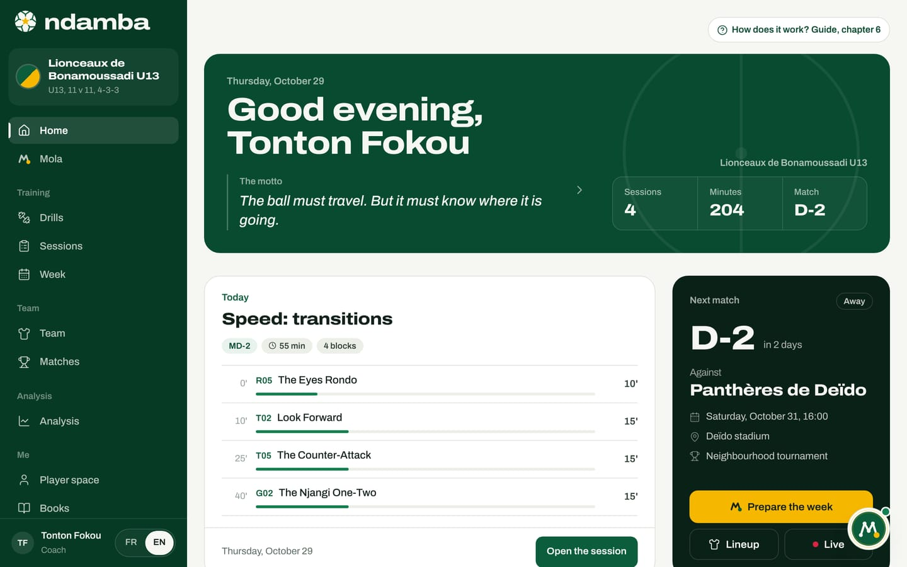
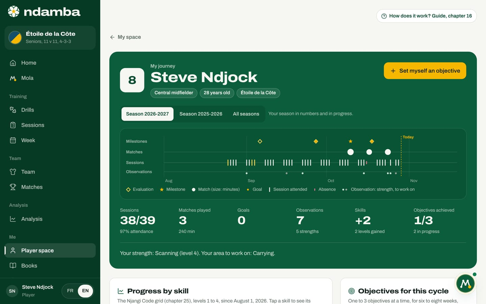

The 2026-2041 plan: five stages to the trophy
Fifteen years, three World Cups, five stages. For each one, what happens on the pitch, what Ndamba does, who takes part, the proposed targets and the risks to reduce.
11 min read
The previous chapter made the diagnosis: Africa does not lack talent, it lacks continuity. This chapter turns that diagnosis into a calendar. Between 2026 and 2041, three World Cups will be played: in 2030, in 2034 and in 2038. Ndamba’s goal is for an African nation, Cameroon first, to lift the trophy within the next fifteen years. The proposed path has five stages. For each one: what happens in football, what the app does, who is involved, what to measure and what could go wrong.
What this plan is, and what it is not
A fifteen-year plan is not a forecast: nobody can promise a trophy. What you can do is organise the years so that each one prepares the next, and check along the way that you are really moving forward.
Two rules frame everything that follows. First, no partnership has been signed to date: when this chapter talks about the federation, a league or pilot clubs, it describes a goal. Second, the tool is described as it is: when a stage needs a feature that does not exist yet (accounts, sync, payments), the text says so and points to chapter 26.
The guiding line is simple: one game model, the one in The Njangi Code, taught the same way from grassroots football to the senior national team, and one measure, the Njangi Index, to check season after season that players really keep the ball with purpose.

The fifteen-year window and the players’ ages
Cameroon holds the African record with eight World Cup appearances, and its best result is still the 1990 quarter-final. Yet it missed the 2026 tournament: second in its qualifying group behind Cape Verde, then beaten 1-0 by DR Congo in stoppage time of the African play-off semi-final in Rabat, on 14 November 2025. No African nation has ever won the World Cup; the continent’s best result is Morocco’s semi-final in 2022.
Within the window, most of the calendar is known:
- 2030: Morocco, Spain and Portugal, with three centenary matches in Uruguay, Argentina and Paraguay. An African country co-hosts.
- 2034: Saudi Arabia.
- 2038: not yet awarded (October 2026).
- Every year, the FIFA U-17 World Cup, played with 48 teams since 2025 and hosted in Qatar from 2025 to 2029: a yearly checkpoint for each generation.
The calculation behind the whole plan is about age. A player who is 12 in 2026 will be 16 in 2030, 20 in 2034 and 24 in 2038. A player who is 16 in 2026 will be 20, then 24, then 28.
| Age in 2026 | In 2030 | In 2034 | In 2038 | Example |
|---|---|---|---|---|
| 10 | 14 | 18 | 22 | Kaydoudou, the younger of the two brothers in the novel |
| 12 | 16 | 20 | 24 | BriBri, the elder |
| 14 | 18 | 22 | 26 | The middle of the generation |
| 16 | 20 | 24 | 28 | Today’s U17s |
The generation aged 12 to 16 in 2026 will be 20 to 24 in 2034, and 24 to 28 in 2038, the age at which a footballer is in full maturity. In 2030 it will still be playing youth football: 2030 is therefore the year of the U15, U17 and U20 national teams, and the first visible test for African football, since Morocco co-hosts.
The app’s mantra says "in 2030 or 2034". The plan keeps all three tournaments open, but it sets its proposed targets on the generation trained by the method: a quarter-final or better in 2034, the trophy in 2038. If the current senior team can shine earlier, nothing in the plan stands in its way.

Stage 1. 2026 to 2027: the first circle
In football. Pilot clubs and academies in Douala, Yaoundé and Bafoussam, and in the diaspora, adopt The Njangi Code and use Ndamba every week: sessions built on the seven intentions, a week planned from MD-4 to MD-1, matches tagged live from the touchline.
What Ndamba does. Everything this stage needs already exists:
- the 64 drills and both books, open to everyone on the Free plan;
- the session builder, the Week page and Prepare the week with Mola, match analysis on video or live and the report with the Njangi Index, in Coach Pro;
- every age group of an academy, from U8 to the first team, in Club and academy;
- for children, today’s challenges, the 40 Ball Lessons and the notebook, presented in Player Premium, with a For parents box on the home screen.


Who is involved. The coaches and educators of the pilot clubs, their technical directors, the parents of the youngest players, and the Ndamba team (William Foteping, Lemon Network Solutions) to teach the game model and support the first weeks.
Proposed targets.
- 20 pilot clubs and academies using Ndamba every week.
- 100 coaches trained in the method.
- 1,000 matches tagged, to build the first reference values of the Njangi Index by age.
Why 1,000 matches? The match report says it in "What each sub-index measures": "The benchmarks are internal to the Njangi method, to calibrate on your own matches." The reading bands (35, 50, 65 and 80 out of 100) come from the book. To know what a good Index looks like for U13s or U17s, you need hundreds of matches tagged in each age group, with the same definitions. These age references are the first asset the plan builds.
Risks and how to reduce them.
- The data stays on each device. Without accounts, counting tagged matches means each pilot club has to share its backups voluntarily, exported from Settings. Answer: one backup a week, a written agreement with each club, and the precautions of chapter 25 for children’s data.
- Tagging takes rigour. A badly tagged match skews the reference. Answer: the same codes for everyone (chapter 12) and a review with Fix the tags.
- Early momentum fades, resources are thin. Answer: few clubs at first, followed closely; a light app that works on a phone; education that stays free.
Stage 2. 2028 to 2029: the league
In football. A youth league adopts the shared game model: its clubs train the same intentions, tag their matches the same way and speak the same vocabulary.
What Ndamba does. This stage needs features that are planned but not built yet: accounts, sync between devices and payments must be live, along with coach education modules. Today’s tools remain the foundation: Club and academy for each club, and Federation, on quote, a plan that also covers leagues.
Who is involved. The league, the clubs’ technical directors, the coaches trained in stage 1 and the analysts.
Proposed targets.
- 300 teams playing with the shared game model.
- Reference values of the Njangi Index for every age group.
- The first certified Njangi coaches.
Risks and how to reduce them.
- Moving from local to shared. Sync will touch children’s data. Answer: apply the principles of chapter 25 (parental consent, everyone sees only what concerns them) before anything goes live.
- Payments run late. The Premium page announces Mobile Money and cards, but they are not connected. Answer: a league is handled on quote, without waiting for online payment.
Stage 3. 2030: the youth national teams
In football. The U15, U17 and U20 national teams work with the national game model in Ndamba. The U-17 World Cup comes round every year: a chance to check that the principles hold against the best nations. Diaspora players are spotted and followed with the same benchmarks as those trained at home. And Africa co-hosts the World Cup, in Morocco.
What Ndamba does. The Federation plan brings together the national game model, coach education and dedicated support. Each player’s journey shows their sessions, matches, coaches’ observations and objectives, season after season. The report and video serve the national teams’ matches. Today, the Federation or league role opens the same home screen as a coach; a view that brings several national teams together is still to be built.


Who is involved. The national technical directorate (for Cameroon, FECAFOOT, as a partnership goal), the youth national coaches and their analysts, the developing clubs of the first circle and of the league.
Proposed targets.
- The U15, U17 and U20 national teams all work with the same national game model.
- Every match of the three teams is tagged with the same codes as in the clubs.
- A list of diaspora players followed with the same benchmarks.
Risks and how to reduce them.
- The partnership does not exist yet. Answer: arrive with evidence, the age references from stages 1 and 2.
- Staff change. Answer: a written, shared game model does not depend on one person; that is the core argument of chapter 22.
- A youth tournament is judged too quickly. Answer: read the Index and the progress over several seasons.
Stage 4. 2031 to 2034: the generation
In football. The players who were 12 to 16 in 2026 reach the senior team; in 2034 they are 20 to 24. The Njangi Index has followed them since the academy: we know how they keep the ball, what they have worked on and at what age they passed each milestone. The 2034 World Cup is played in Saudi Arabia.
What Ndamba does. The performance space for players aged 16 and over (match week, form and load, the last match, objectives), the journey across every season, and the reports and video for the senior team’s staff.

Who is involved. The head coach and staff, the analysts, the clubs of the internationals, at home and abroad, and the players themselves.
Proposed target. A quarter-final or better in 2034. To put the ambition in context: that is the best result in Cameroon’s history, the one from 1990, when Roger Milla, aged 38, scored four goals and danced at the corner flag.
Risks and how to reduce them.
- The generation scatters. The best players leave young for clubs abroad. Answer: the journey follows the player, not the club, and diaspora clubs are part of the first circle.
- Load wears out a precious generation. Answer: daily form and session load already exist in the player space; they need to be filled in and read.
Stage 5. 2035 to 2041: the trophy
In football. The whole pyramid speaks the same football, from grassroots to the senior team. Other African federations adopt the model. In 2038 the generation trained by the method is 24 to 28: BriBri is 24, Kaydoudou 22. The host country is not known yet.
What Ndamba does. The same platform, in more languages and for more federations, with years of tagged matches behind it: the age references become a shared good of African football.
Who is involved. The federations that adopt the model, their leagues, their clubs, and a whole generation trained in the same game.
Proposed targets. The trophy in 2038. By 2041, a full generation trained in a single game model, and other African federations working with it.
Risks and how to reduce them. The model can harden: it is reviewed using the tagged matches, which show what works and what no longer does. Growth can dilute standards: coach certification and identical tagging definitions everywhere protect them.
The fifteen years in one table
The third column holds only facts known in October 2026. The last column holds the plan: proposed targets.
| Year | Age of the 2026 12 to 16s | Known fixtures | Stage and proposed targets |
|---|---|---|---|
| 2026 | 12 to 16 | World Cup in the USA, Canada and Mexico, without Cameroon | Stage 1: first pilot clubs |
| 2027 | 13 to 17 | U-17 World Cup in Qatar | Stage 1: 20 pilots, 100 coaches, 1,000 tagged matches |
| 2028 | 14 to 18 | U-17 World Cup in Qatar | Stage 2: accounts, sync, payments |
| 2029 | 15 to 19 | U-17 World Cup in Qatar | Stage 2: 300 teams, age references, certified coaches |
| 2030 | 16 to 20 | World Cup in Morocco, Spain and Portugal | Stage 3: U15, U17 and U20 on the national model |
| 2031 | 17 to 21 | Stage 4: the generation nears the senior team | |
| 2032 | 18 to 22 | Stage 4 | |
| 2033 | 19 to 23 | Stage 4: the 2034 squad takes shape | |
| 2034 | 20 to 24 | World Cup in Saudi Arabia | Stage 4: a quarter-final or better |
| 2035 | 21 to 25 | Stage 5: other federations adopt the model | |
| 2036 | 22 to 26 | Stage 5 | |
| 2037 | 23 to 27 | Stage 5: preparing for 2038 | |
| 2038 | 24 to 28 | World Cup, host not yet chosen | Stage 5: the trophy |
| 2039 | 25 to 29 | Stage 5 | |
| 2040 | 26 to 30 | Stage 5 | |
| 2041 | 27 to 31 | Stage 5: a full generation trained in one model |
The U-17 World Cup is played every year; only the editions with a known host appear here.
How to follow the plan
The three stage 1 targets are simple to count: clubs, coaches, tagged matches. The app produces the raw material for those counts, but it does not report them by itself, since nothing leaves the device without accounts. Chapter 26 sets out the indicators and how to measure them.